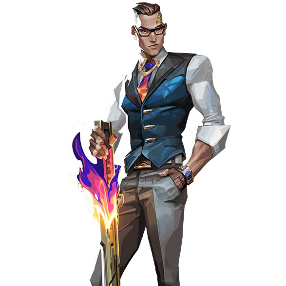

チェンバー

国籍: フランス
ロール: センチネル
チェンバーは高精度のスナイピングとテレポートを駆使して敵を制圧するエージェントです。彼のアビリティは、遠距離からの攻撃と迅速な移動を可能にします。
公式トレーラー
スキル
| スキル名 | 値段 | 所持上限 | 説明 |
|---|---|---|---|
| ヘッドハンター (Q) | 100 | 8発 | スキル使用で高精度のピストルを装備。高いダメージを与える。 |
| ランデブー (E) | 無料 | 2個 | スキル使用でテレポートを設置し、再使用でその地点に瞬間移動する。 |
| トレードマーク (C) | 200 | 1個 | 敵が近づくとスローフィールドを発動するトラップを設置。敵の移動速度を遅くする。 |
| ツールドフォース (X) - アルティメット | - | 1個 | 高威力のスナイパーライフルを装備。キルを取ると敵の死体周辺にスローフィールドを展開。 |
立ち回りとおすすめマップ
攻めの立ち回り
チェンバーは遠距離からの攻撃に優れているため、ヘッドハンターやツールドフォースを使って敵を狙撃します。ランデブーを使って安全に位置取りし、トラップを使って敵の進行を妨害します。
守りの立ち回り
守りにおいては、トレードマークを活用して敵の進行を監視し、ランデブーで素早く逃げることが可能です。ツールドフォースを使って敵を遠距離から制圧し、エリアを守ります。
トラップの設置場所
トラップを設置する場所は、敵がよく通る場所や角などが効果的です。敵が予想しない場所に設置することで、効果的に敵を無力化できます。
アルティメットの使い方
ツールドフォースは高威力のスナイパーライフルで敵を一撃で倒せるため、重要なラウンドで使用し、チームの勝利に貢献します。キルを取ることでスローフィールドを展開し、敵の動きを封じることができます。